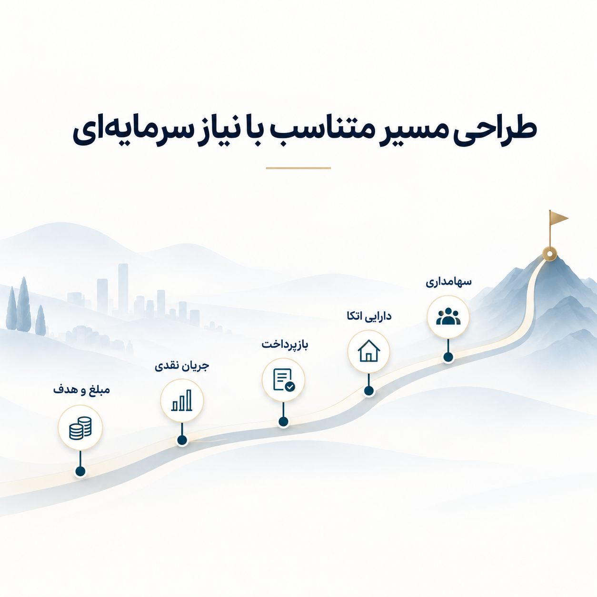

تأمین مالی جمعی
ارزیابی طرح، طراحی ساختار مالی و آمادهسازی مستندات برای ورود به فرایند تأمین مالی جمعی.
- ارزیابی جریان نقدی
- تعیین دوره و نرخ بازده
- بررسی تضامین
- آمادهسازی مستندات

تحلیل، طراحی و تسهیل راهکارهای تأمین مالی متناسب با ساختار و نیاز هر کسبوکار.
مبلغ و هدف تأمین مالی، جریان نقدی، توان بازپرداخت، داراییهای قابل اتکا و ساختار سهامداری، در انتخاب ابزار مناسب مؤثرند. این متغیرها پیش از پیشنهاد هر روش بررسی میشوند.

ارزیابی طرح، طراحی ساختار مالی و آمادهسازی مستندات برای ورود به فرایند تأمین مالی جمعی.
آمادهسازی کسبوکار برای جذب سرمایه و مذاکره با سرمایهگذاران مالی یا راهبردی.
بررسی ظرفیت اعتباری و انتخاب مسیر مناسب برای استفاده از منابع بانکی و غیربانکی.
طراحی ساختارهای بدهی، سرمایهای یا ترکیبی متناسب با ویژگیهای شرکت و پروژه.
نیاز سرمایهای و اطلاعات اولیه شرکت را ارسال کنید تا مسیرهای قابل استفاده بررسی شوند.